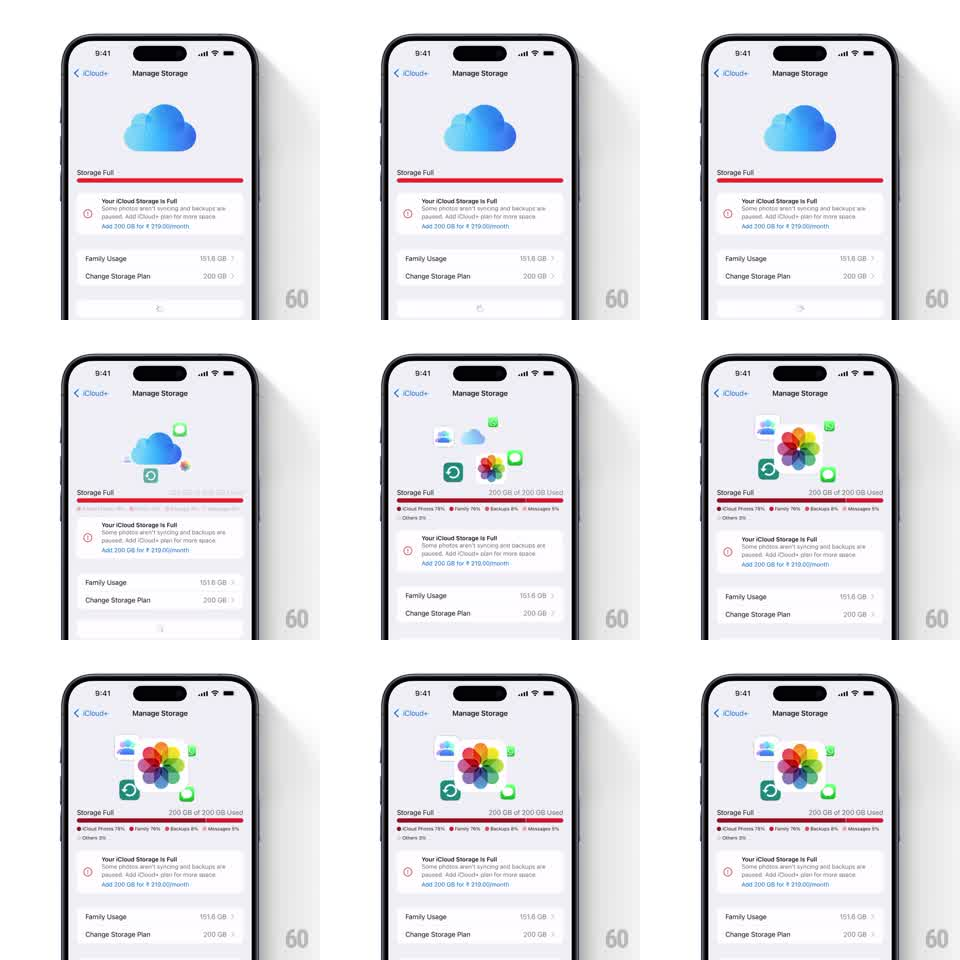

Media
Frame-by-frame

Rebuild this animation 1:1: Apple's iCloud "Manage Storage" screen - the blue iCloud cloud at the top animates into an orbit of app icons (Photos flower, Mail, Messages, Notes, backups) floating around it with spinning green sync arrows, while the "Storage Full" bar fills red with a breakdown legend (iCloud Photos 78%, Family 16%, Backups 4%, Messages 1%).

Rebuild this animation 1:1: Apple's iCloud "Manage Storage" screen - the blue iCloud cloud at the top animates into an orbit of app icons (Photos flower, Mail, Messages, Notes, backups) floating around it with spinning green sync arrows, while the "Storage Full" bar fills red with a breakdown legend (iCloud Photos 78%, Family 16%, Backups 4%, Messages 1%).
## Integration
Integration: stack-agnostic spec - springs given as stiffness/damping, timed motions as duration + curve; map every value to your framework and animation library of choice.
## Scene
iOS Manage Storage settings screen (iCloud+ back link, Manage Storage title). Top: a blue iCloud cloud icon that becomes the hub of an orbiting cluster of app icons with green sync arrows. Below: "Storage Full" label, a red storage bar ("200 GB of 200 GB Used") with a colored segment legend, a warning block ("Your iCloud Storage is Full... Add 200 GB for Rs 219.00/month"), and Family Usage / Change Storage Plan rows.
## Motion spec
Pattern: orbital icon cluster around a hub with progress fill.
- The cloud fades in and pulses once (scale 1 -> 1.05 -> 1, 400ms).
- App icons emerge from behind the cloud one at a time (scale 0 -> 1, spring ~300/18, 120ms stagger) and take orbit positions around it.
- The cluster rotates slowly (full orbit about 12s, linear) while each icon counter-rotates to stay upright.
- Two green circular sync arrows chase each other around the cluster (rotating 6s loop, opposite phase).
- Individual icons occasionally drift outward and back (translateY +/-4pt, 3s sine, randomized phase).
- The storage bar fills red from 0 to full (600ms ease-out) and the legend rows fade up staggered (150ms, 60ms apart).
## Calibration
- Orbital motion is slow and weightless - no springiness in the loop.
- Icons stay upright at all times; only the orbit ring rotates.
## Reduced motion
The cluster appears fully formed and static; the bar fills without animation.
## Don't miss
- The green sync arrows are the only saturated moving accent - keep them crisp.
- The cloud stays centered and calm while everything orbits it.